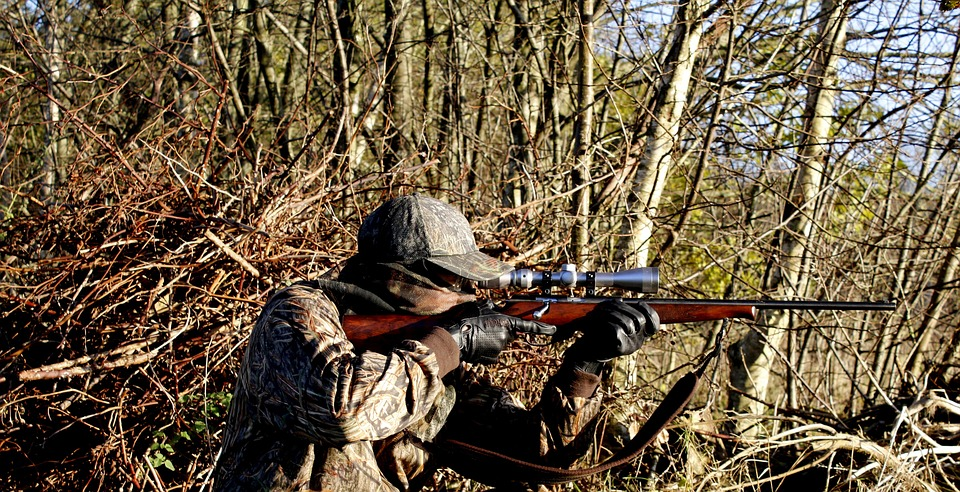

Legal and Illegal?
Here you can find information about legal and illegal hunting practices, as well as the implications of each.
| Illegal Hunting |
|---|
| You cannot just go out and hunt you will need a proper license to hunt any animal. Trespassing and hunting on private property without permission is illegal. |
| Hunting for wolves is illegal in many areas as they are a protected species. Including places like Colorado, Oregon, and even Europe. |
| Using illegal weapons is prohibited and can result in severe penalties. Those weapons may include a shotgun, poison, or an automatic weapon. |
| Killing wolves that have tags or collars is illegal and can result in heavy fines and even jail time. |
| Even if you do hunt you can exceed the bag limit is illegal which would mean you cannot exceed the legal killing limit of wolves or other animals in a certain area. |
| Legal Hunting |
|---|
| Hunting is legal for wolves in only these specific areas: Idaho, Montana, Wyoming, and Alaska with a proper license except Wyoming which does not require a license for hunting wolves. |
| Federal Protection Status must be checked in state regulations before hunting. This ensures that hunters are aware of any specific protections in place for wolves in their area. |
| Legal weapons vary from state to state, but generally include modern firearms, rifles, and archery equipment. It's important to check local regulations for specific requirements. |
| Specific seasons for hunting wolves are established by state regulations. These seasons are designed to ensure sustainable populations and typically occur during certain times of the year. |
| Legal to hunt on public lands with the appropriate permits and during designated seasons. Private land hunting is also legal with the landowner's permission. Many states require hunters to wear blaze orange or bright clothing for safety. |
